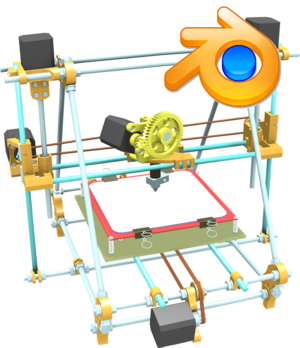
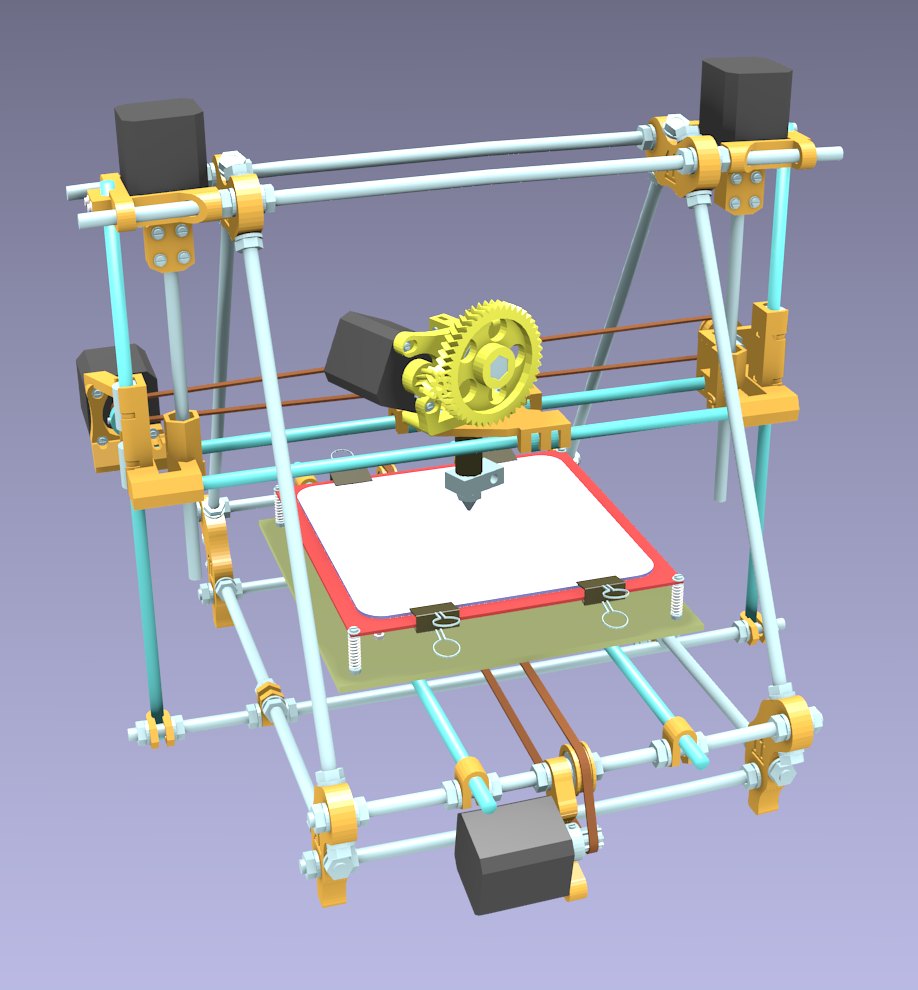
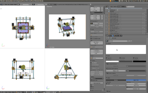
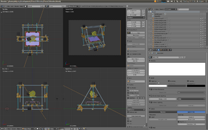
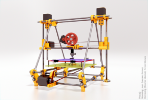
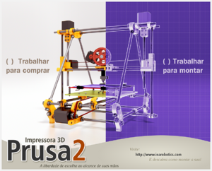

| Prusa2-Blender en Thingiverse |
|---|


Contenido
[ocultar]Introducción
Modelo virtual de la Prusa2 hecha en Blender. Está construida a partir de las piezas reales (STLs). Se han añadido las vitaminas necesarias, que están modeladas en Openscad, exportadas a STL e importadas en el Blender.
Es una reconstrucción EXACTA, que incluye todos los tornillos, arandelas y piezas necesarias de la Prusa 2. El extrusor es el Jonaskuehling.
La Prusa2 Blender es muy útil como documentación, para saber cómo van las piezas montadas, y para generar a partir de ella imágenes para documentos. También se pueden realizar animaciones y es la escusa perfecta para aprender Blender :-)
Blender es software libre y multiplataforma, es decir, pertenece al Patrimonio tecnológico de la humanidad, que tenemos que difundir, proteger, utilizar y expandir.
Ficha
|  |
|
|


Descargas
| Prusa2-blender-v1.blend.zip | Fichero para Blender (comprimido) |
| Obijuan-Prusa2-Blender-v1.0.zip | Fuentes. Repositorio completo con las fuentes de las vitaminas en openscad y sus STLs |
Vídeo
| 300|250</youtube> |
Fotos
| Álbum de fotos en google+ |
|---|
|  Captura de pantalla (click para ampliar) |
 Captura de pantalla (click para ampliar) |
|  Espectacular renderizado hecho por Cícero Morales (click para ampliar) |
 Cartel hecho por Cícero Morales (click para ampliar) |


Repositorio
Autor
- Juan González Gómez (Obijuan)
Licencia
| |
Créditos
- A Cícero Morales de Brasil por el espectacular renderizado que ha hecho, y por enseñarme Blender en el taller de Latinoware 2011.
Historia
- 21/Agosto/2012: (Blog) Primera versión de la página lista
- 20/Agosto/2012: Comenzada esta página
Enlaces
|
|
Proyecto Clone Wars |